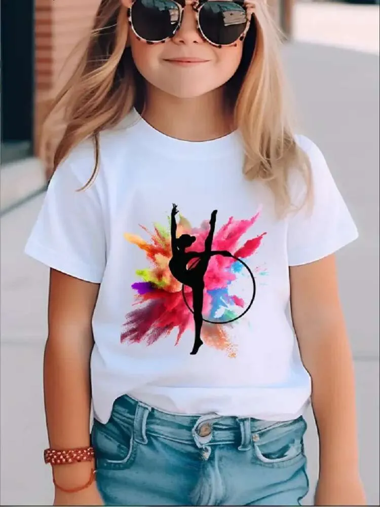
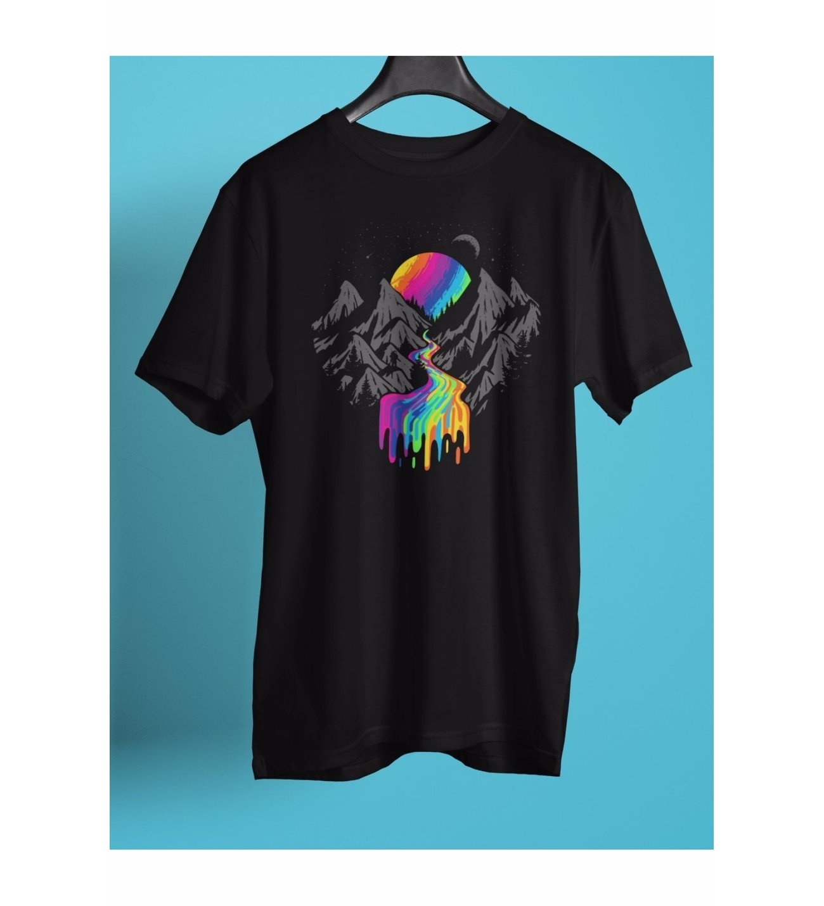
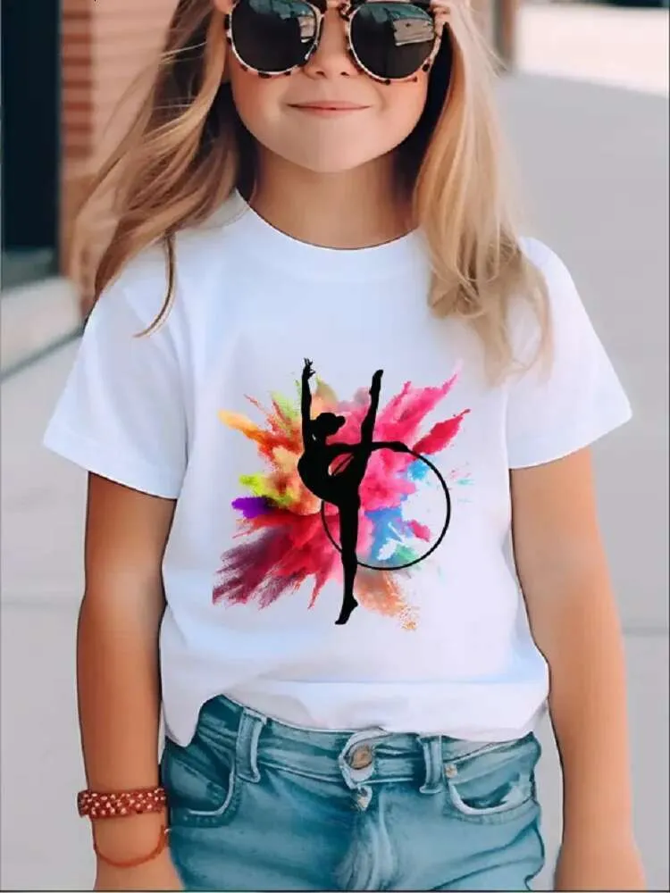
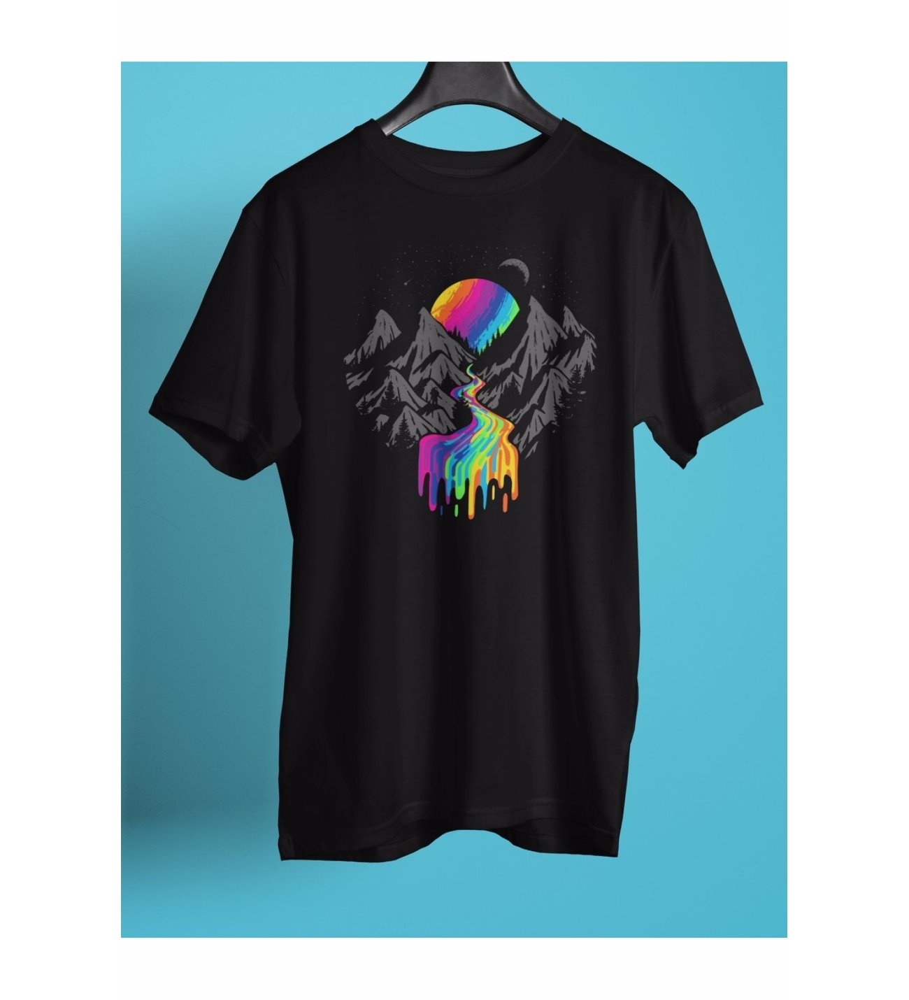
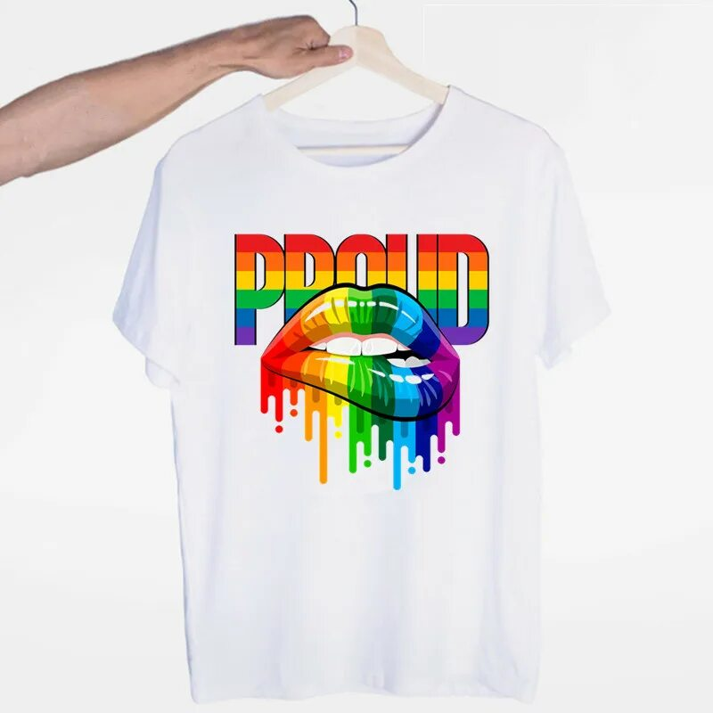
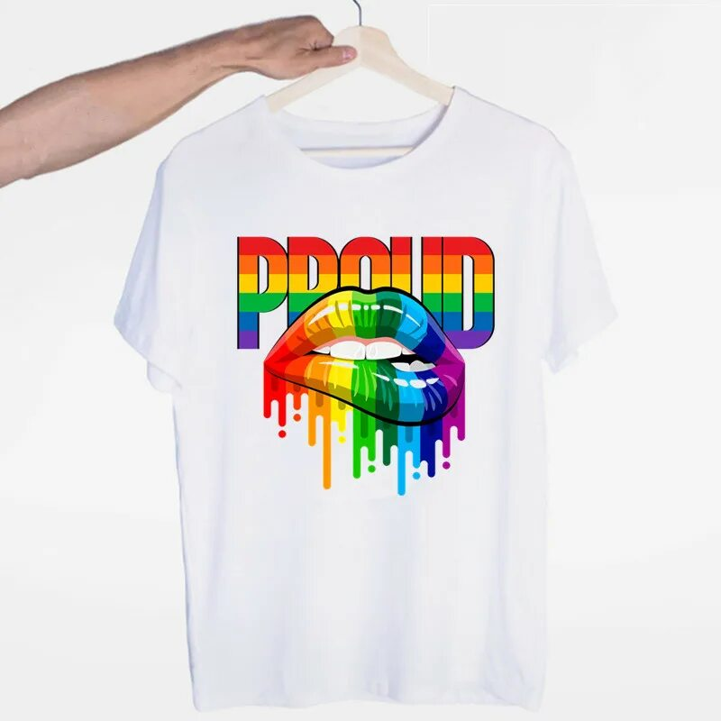

Baski bo‘limi — TROY Rotary Mashinalari
TROY Rotary 10-Color Printing Machine
TROY 10 rangli rotatsion bosma mashinasi murakkab, ko‘p qatlamli va 10 xil rang kombinatsiyasida bosma dizaynlarni mukammal chiqarishga mo‘ljallangan. Katta hajmdagi buyurtmalar uchun eng yuqori aniqlik va barqarorlikni ta’minlaydi.
Asosiy texnik imkoniyatlar:
• 10 ta alohida rang sektsiyasi
• 35–55 m/min ishlab chiqarish tezligi
• Registr aniqligi juda yuqori
• Reaktiv va pigment bo‘yoqlar bilan mos
• Uzluksiz ishlab chiqarish uchun stabil mexanizm
10 rangli bosma galereyasi
TROY Rotary 7-Color Printing Machine
TROY 7 rangli mashinasi o‘rta murakkablikdagi naqshlar uchun ideal bo‘lib, ayniqsa bolalar kiyimlari, rangli matolar va o‘rtacha dizaynlar uchun samarali yechimdir.
Asosiy texnik imkoniyatlar:
• 7 ta rang moduliga ega
• Ishlash tezligi: 30–45 m/min
• Paxta, trikotaj va poplin uchun to‘liq mos
• Tejamkor bo‘yoq sarfi
• Ranglar aniqligi yuqori
7 rangli bosma galereyasi
TROY Fast Rotary — 4-Color Printing Machine
TROY 4 rangli bosma mashinasi sodda va o‘rta dizayndagi buyurtmalarni yuqori tezlikda bajarishga mo‘ljallangan. Sport kiyimlari, fon naqshlari va katta hajmli buyurtmalar uchun tejamkor variant.
Asosiy texnik imkoniyatlar:
• 4 rangni bir vaqtning o‘zida bosadi
• Ishlash tezligi: 50–70 m/min
• Kam energiya sarfi
• Oddiy dizaynlar uchun maksimal samaradorlik
• Oson boshqaruv paneli
4 rangli bosma galereyasi

 



 
